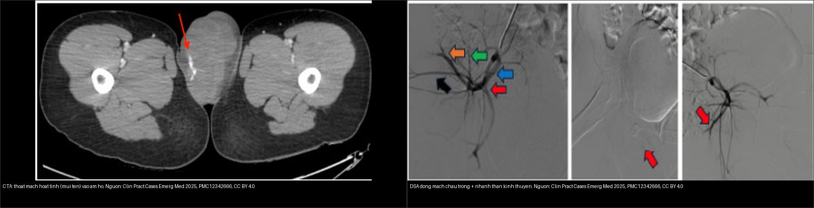
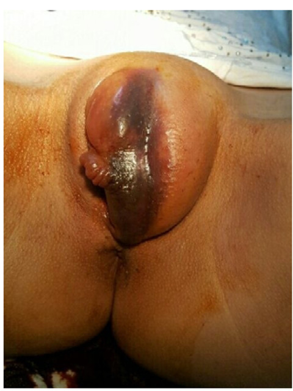
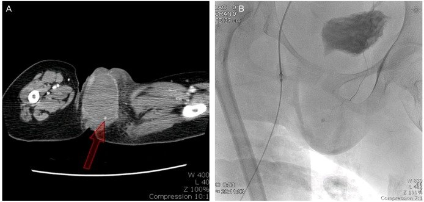
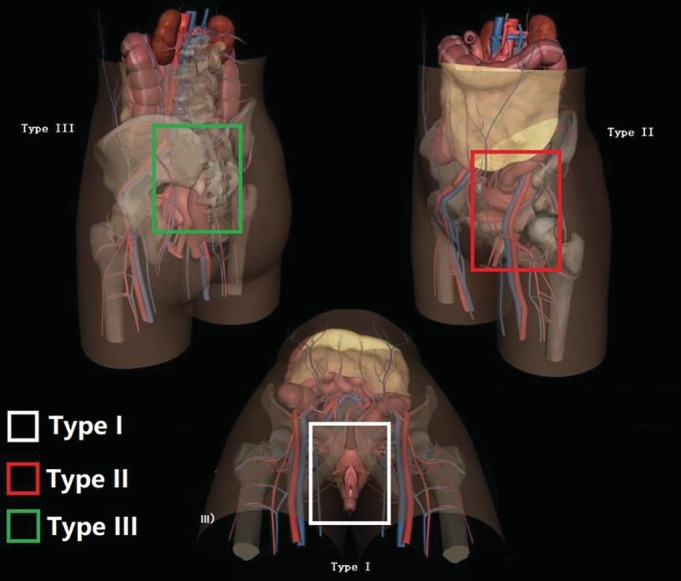
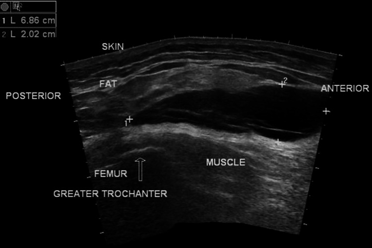

643 — Chấn thương đáy chậu – sinh dục ngoài ở trẻ: máu tụ âm hộ, rách âm đạo & tổn thương kèm vỡ khung chậu mở
Tags: pattern:chan-thuong-day-chau pattern:mau-tu-am-ho pattern:rach-am-dao pattern:khung-chau-mo vung:day-chau-nhi vung:sinh-duc-nhi score:WSES-open-pelvic protocol:CT-bung-chau-can-quang protocol:CTA-nut-mach protocol:US-day-chau
Mức chắc chắn (certainty): tổng hợp y văn (literature synthesis) — nhóm tự biên từ y văn mở (bài tổng quan + ca có số); 4 ca trong quiz là ca nguyên văn (verbatim case) chép đúng tuổi – cơ chế – chú thích gốc.
Câu hỏi gốc của mọi chấn thương đáy chậu – sinh dục ngoài ở trẻ: máu tụ này đang TỰ CẦM hay đang CHẢY (có thoát mạch hoạt tính), và tổn thương có thông với Ổ BỤNG/vỡ khung chậu không? — vì máu tụ âm hộ đơn thuần thường bảo tồn, còn thoát mạch hoạt tính (giả phình động mạch thẹn) và rách âm đạo kèm vỡ khung chậu mở là cấp cứu có thể chết người (sốc giảm thể tích, nhiễm trùng huyết).
1. Tổng quan — cơ chế & TẠI SAO ảnh hiện như vậy
A. Giải phẫu quyết định hình thái
- Âm hộ (vulva) = môi lớn, môi nhỏ, âm vật, tiền đình; nằm ở tam giác niệu–sinh (urogenital triangle) của đáy chậu. Mạch nuôi chính: động mạch thẹn trong (internal pudendal) — nhánh của động mạch chậu trong — tách thành động mạch môi sau, động mạch trực tràng dưới và nhánh ngang đáy chậu (Hong HR et al., Obstet Gynecol Sci 2014, PMC3965703).
- TẠI SAO máu tụ dễ hình thành và dễ "khu trú": âm hộ là mô liên kết lỏng, mạch máu dày, được bao bởi màng đáy chậu (perineal membrane) + mạc Colles tạo thành túi đáy chậu nông (superficial perineal pouch) — một khoang kín. Máu chảy vào khoang này bị ép lại thành khối căng (fluctuant mass), phồng ra ngoài da, có thể vượt 15 cm, và không thấm xuống đùi (khác máu tụ dưới da lan rộng). Hình thái hai môi bị đẩy sang hai bên = "máu tụ cánh bướm" (butterfly hematoma).
- TẠI SAO chảy máu nặng: mạch ở đây thuộc nhánh tận của chậu trong → khi đứt (do vỡ khung chậu, đụng dập dạng cưỡi ngựa, hoặc giả phình) không co mạch tự cầm hiệu quả vì khoang mô lỏng; máu tụ lớn có thể gây sốc giảm thể tích chỉ trong vài giờ.
B. TẠI SAO thấy được trên từng phương thức — vật lý đậm độ
- Siêu âm (đầu tay): máu tụ = khối echo hỗn hợp, không có mạch bên trong, đo được kích thước (ví dụ 6,86 × 2,02 cm ở một ca Morel-Lavallée, PMC11290411); giúp phân biệt máu tụ đặc vs tụ dịch dưới da và hướng dẫn chọc hút. Nhược điểm: khó thấy phần sâu sau xương mu và các tổn thương ổ bụng kèm.
- CT cản quang: là chìa khóa. Máu tụ cấp 45–70 HU; thoát mạch hoạt tính (active extravasation) > 90 HU và lan rộng ở thì muộn (khác cục máu tụ "sentinel clot" 45–70 HU, không lớn thêm). Thì động mạch phát hiện nguồn chảy (thẹn trong/chậu trong); CT cũng thấy vỡ khung chậu, tràn khí/dị vật, và tổn thương tạng kèm.
- CTA + DSA: khi có thoát mạch → chụp mạch và nút mạch (TAE) bằng bọt gelatin (gelfoam), coil…; DSA cho thấy rõ cây mạch chậu trong và nhánh thẹn để chọn vị trí nút.
- MRI: hữu ích với máu tụ mạn/tái diễn và Morel-Lavallée — tín hiệu T1/T2 thay đổi theo tuổi máu (tối cấp–cấp T1 đẳng/tối, bán cấp T1 sáng do methemoglobin, mạn có viền hemosiderin tối); phân biệt với áp-xe/u.
C. Ngưỡng định lượng cần nhớ
- Dịch tễ: máu tụ sinh dục không do sản khoa chiếm tới 0,8% tổng số nhập viện phụ khoa; máu tụ âm hộ sản khoa 1–2/1.000 ca sinh (PMC3965703). Ở trẻ, cơ chế hay gặp: đụng dập dạng cưỡi ngựa (straddle), quan hệ/lạm dụng tình dục, vỡ khung chậu, tai nạn.
- Ca nguyên văn tiêu biểu (tuổi – kích thước – nguồn chảy):
- 13 tuổi (PMC3965703): máu tụ môi lớn trái 15 × 15 cm, nghi giả phình động mạch thẹn trái, không chấn thương; mạch 132 lần/phút.
- 18 tuổi (PMC12342666): máu tụ âm hộ trái 12,4 × 6,8 × 7,0 cm, thoát mạch hoạt tính từ động mạch chậu trong PHẢI; hemoglobin 14,3 → 11,9 g/dL; nút mạch chậu trong phải bằng gelfoam.
- 14 tuổi (PMC8142749): máu tụ 12 × 10 cm che môi nhỏ–môi lớn và niệu đạo, kèm rách màng trinh 2 × 2 cm ở vị trí 9 giờ; bí tiểu 24 giờ.
- Vỡ khung chậu mở (open pelvic fracture): phân độ WSES cho tử vong nhẹ 3,5% · trung bình 11,2% · nặng 23,8% (Li PH et al., World J Emerg Surg 2022, PMC9145531); phân vùng theo giải phẫu type I đáy chậu hay kèm tổn thương hậu môn–trực tràng/âm đạo/niệu đạo, tử vong chung của loạt 41,8% (Wang ZH & Li KN, Orthop Surg 2019, PMC6904613).
- Cờ đỏ lạm dụng tình dục (sexual abuse): vết thương/rách ở màng trinh/vòm âm đạo, không khớp cơ chế kể, chảy máu nhiều hơn dự kiến, trẻ nhỏ tuổi — phải phối hợp quy trình pháp y (khám dưới gây mê, chụp/ghi lại, lấy mẫu theo quy định).
2. Mẫu hình + chẩn đoán phân biệt theo cơ chế (gamut)
Gamut theo cơ chế chấn thương:
- Cưỡi ngựa (straddle injury): ngã đè lên vật cứng → đụng dập đáy chậu/môi lớn/môi nhỏ, thường không rách màng trinh; có thể rách niệu đạo trước (nam).
- Quan hệ/lạm dụng (coital/abuse): rách màng trinh/âm đạo, chảy máu; luôn cân nhắc lạm dụng nếu cơ chế không khớp.
- Vỡ khung chậu mở: vết thương đáy chậu/âm đạo thông với ổ gãy → nhiễm trùng huyết; kèm đứt niệu đạo (bài 637) và vỡ khung chậu (bài 645).
- Tự phát/giả phình động mạch: không chấn thương, máu tụ lớn nhanh, thoát mạch hoạt tính → nút mạch.
- Iatrogenic: sau thủ thuật, đặt ống thông, chọc dò (nhất là trẻ nằm lâu, rối loạn đông máu).
Gamut theo vị trí:
- Môi lớn/môi nhỏ (âm hộ): máu tụ âm hộ; Morel-Lavallée nếu là tụ dịch dưới da/mỡ (lệch giữa mạc nông và mạc sâu, thường ở đùi/hông).
- Tiền đình/màng trinh/âm đạo: rách âm đạo (thường cần khám dưới gây mê).
- Đáy chậu sau/hậu môn–trực tràng: tổn thương trực tràng → khung chậu mở, cần colostomy.
- Niệu đạo: đứt niệu đạo (xem bài 637).
Mnemonic — "STAB": Straddle (cưỡi ngựa), Trauma năng lượng cao/vỡ khung chậu, Abuse (lạm dụng), Bleeding hoạt tính (thoát mạch/giả phình).
3. Bảng so sánh phân biệt (ma trận đối chiếu)
| Thực thể (entity) | Hình ảnh điển hình | Chốt vào (rule-in) | Chốt loại (rule-out) | Gợi ý xác nhận |
|---|---|---|---|---|
| Máu tụ âm hộ đơn thuần | Khối căng vùng môi lớn/nhỏ; US: echo hỗn hợp không mạch; CT: máu tụ 45–70 HU, không thoát mạch | Máu tụ 45–70 HU, không thấy thuốc thoát ra | Thoát mạch > 90 HU/lớn dần → giả phình/đang chảy | US + CT thì ĐM; điều trị bảo tồn, chọc hút nếu lớn |
| Giả phình/đứt động mạch thẹn–chậu trong | CT/CTA: ổ thuốc thoát mạch hoạt tính, lan rộng ở thì muộn; DSA: nhánh thẹn | Thoát mạch hoạt tính từ nhánh chậu trong | Không thấy thoát mạch → chỉ là máu tụ | CTA → DSA nút mạch (gelfoam/coil) |
| Rách âm đạo (coital/abuse/straddle) | Soi/khám thấy vết rách chảy máu ở màng trinh/vòm; CT không loại trừ | Rách thấy khi khám dưới gây mê | Khám ngoài bình thường KHÔNG loại trừ (máu tụ che) | Khám dưới gây mê + soi âm đạo |
| Vỡ khung chậu MỞ (đáy chậu thông ngoài) | Vết thương đáy chậu/âm đạo/trực tràng + ổ gãy; khí/máu tụ | Thông thương ổ gãy với đáy chậu/hậu môn/âm đạo | Da/mô nguyên vẹn → khung chậu kín | Phân độ WSES; làm sạch + kháng sinh + colostomy |
| Morel-Lavallée (tụ dịch dưới da) | US/CT/MRI: tụ dịch thấu kính giữa mỡ dưới da và mạc, thường ở hông/đùi, không máu tụ sâu | Tụ dịch dưới da/mỡ, tách mạc, không có mạch | Máu tụ trong khoang đáy chậu sâu → máu tụ âm hộ | US (đo được), MRI T1/T2 theo tuổi máu |

Trái: CT cản quang thì động mạch — thoát mạch hoạt tính (mũi tên đỏ) từ nhánh chậu trong, máu tụ lan vào âm hộ trái. Phải: DSA động mạch chậu trong (xanh = nhánh trước, đỏ = nhánh sau…) trước nút mạch. Nguồn: Raveiro R et al., Clin Pract Cases Emerg Med 2025 (PMC12342666), CC BY 4.0. Ảnh ghép letterbox, giữ tỉ lệ.4. Protocol chụp + hệ phân độ/điểm chuẩn hóa
Chuỗi hành động:
- Khám toàn diện + đánh giá huyết động (ATLS) trước tiên: máu tụ lớn nhanh = sốc giảm thể tích (ca 18 tuổi: mạch 138, MAP 103 → 72 mmHg).
- Siêu âm đáy chậu/đường niệu đầu tay: đo kích thước, loại trừ tụ dịch dưới da, hướng dẫn chọc hút; siêu âm ổ bụng (FAST) tìm dịch tự do.
- CT bụng–chậu cản quang (thì ĐM + TM + muộn) khi: chấn thương năng lượng cao, máu tụ lớn/nhanh, nghi vỡ khung chậu hoặc tổn thương tạng kèm. Đọc: máu tụ (45–70 HU), thoát mạch (> 90 HU), vỡ khung chậu, tổn thương bàng quang/niệu đạo/trực tràng.
- CTA/DSA + nút mạch khi có thoát mạch hoặc huyết động không ổn định dù hồi sức.
- Khám dưới gây mê (EUA) + soi âm đạo/trực tràng — bắt buộc khi nghi rách âm đạo hoặc vỡ khung chậu mở; hình ảnh học KHÔNG thay thế bước này.
- MRI khi máu tụ mạn/tái diễn, Morel-Lavallée, hoặc phân biệt với áp-xe/u.
Phân độ và thang điểm liên quan:
| Hệ | Dùng cho | Ngưỡng chính |
|---|---|---|
| WSES (khung chậu mở) | Nguy cơ tử vong | Nhẹ 3,5% · trung bình 11,2% · nặng 23,8% (thêm yếu tố sepsis) |
| Phân vùng giải phẫu (Wang) | Vùng tổn thương | Type I đáy chậu · II bẹn–chậu · III cùng–chậu · IV phối hợp; tử vong loạt 41,8% |
| AAST bàng quang/niệu đạo | Tổn thương niệu kèm | Xem bài 637 |
| Matta (khung chậu) | Chất lượng nắn chỉnh | ≤ 4 mm rất tốt · 5–10 mm tốt · > 20 mm kém (bài 645) |
flowchart TD
A["Trẻ chấn thương đáy chậu – sinh dục ngoài"] --> B["ATLS + khám đáy chậu/âm đạo/hậu môn"]
B --> C{"Huyết động ổn định?"}
C -->|"Không / máu tụ lớn nhanh"| D["Hồi sức máu + CT cản quang thì ĐM"]
C -->|"Có"| E["Siêu âm + CT nếu cơ chế năng lượng cao"]
D --> F{"CT: thoát mạch hoạt tính > 90 HU?"}
E --> F
F -->|"Có"| G["CTA/DSA → NÚT MẠCH (nhánh chậu trong/thẹn)"]
F -->|"Không"| H{"Nghi rách âm đạo / vỡ khung chậu MỞ?"}
G --> H
H -->|"Có"| I["Khám dưới gây mê + làm sạch; WSES; colostomy nếu trực tràng"]
H -->|"Không"| J["Máu tụ đơn thuần → bảo tồn, chườm lạnh, giảm đau"]
I --> K["Theo dõi Hb, dấu nhiễm trùng, tái khám"]
J --> K
5. Biến thể bình thường và cạm bẫy
- CẠM BẪY SỐ 1 — khám ngoài "bình thường" rồi dừng: máu tụ lớn che vết rách âm đạo/màng trinh → bỏ sót. Nghi ngờ cao → khám dưới gây mê + soi âm đạo.
- Tưởng máu tụ "tự cầm" nhưng đang chảy: máu tụ lớn dần, đau tăng, mạch nhanh, Hb giảm → thoát mạch hoạt tính; đừng chờ, chụp CT thì ĐM/CTA.
- Nhầm máu tụ âm hộ với Morel-Lavallée: Morel-Lavallée là tụ dịch dưới da/mỡ tách mạc (thường ở hông/đùi, không máu tụ sâu), xử trí khác (dẫn lưu, băng ép, đôi khi xơ hóa).
- "Butterfly hematoma" (máu tụ cánh bướm) là dấu chấn thương đáy chậu, không phải biến thể bình thường — kèm đứt niệu đạo (bài 637).
- Bỏ sót tổn thương hậu môn–trực tràng: một vết thương nhỏ ở đáy chậu có thể thông vào trực tràng → vỡ khung chậu mở, nguy cơ nhiễm trùng huyết; phải thăm trực tràng + soi.
- Bỏ sót lạm dụng tình dục: cơ chế "ngã" không khớp tổn thương, trẻ nhỏ, rách ở màng trinh/vòm → kích hoạt quy trình pháp y, không tự kết luận.
- Sụn sinh dục–ngồi/sụn Y ở trẻ giả đường gãy khi đọc CT khung chậu kèm — luôn đối chiếu tuổi xương (bài 645).
- Thỏa mãn tìm kiếm: đã thấy máu tụ âm hộ rồi dừng → bỏ sót vỡ khung chậu, tổn thương tạng đặc, đứt niệu đạo.
6. Tự lượng giá — Blind Quiz (ảnh trơn ngoài, đáp án ẩn trong khối chi tiết)
Ca 1 — Ảnh ghép đối chiếu: một bệnh nhân, hai thì. Ổ thuốc (mũi tên) trên ảnh trái là gì? Ảnh phải dùng để làm gì?
- Gợi ý lâm sàng: máu tụ âm hộ lớn nhanh, mạch nhanh (138 lần/phút), Hb giảm.
- Câu hỏi: Ổ tăng đậm độ đó là máu tụ hay đang chảy? Bước tiếp theo?
Bấm để hiện đáp án (findings + chẩn đoán)
- Trái (CTA thì động mạch): ổ thoát mạch hoạt tính (mũi tên đỏ) từ động mạch chậu trong PHẢI, máu tụ lan vào âm hộ trái — đang chảy máu, không phải máu tụ đơn thuần.
- Phải (DSA): cây động mạch chậu trong để nút mạch bằng gelfoam; sau nút, chảy máu ngừng, Hb ổn định.
- Chốt: thoát mạch > 90 HU, lớn dần = đang chảy → CTA/DSA nút mạch (khác máu tụ 45–70 HU không lớn thêm).
- Nguồn ảnh: Raveiro R et al., Clin Pract Cases Emerg Med 2025 (PMC12342666), Image 1 + Image 3, CC BY 4.0. Ảnh ghép letterbox.
Ca 2 — Bé gái 14 tuổi, sau lần giao hợp đầu: khối lớn vùng âm hộ + bí tiểu. Nhìn ảnh, gọi tên tổn thương.

- Câu hỏi: Khối này là u hay máu tụ? Vì sao bí tiểu? Cần thăm khám gì thêm?
Bấm để hiện đáp án (findings + chẩn đoán)
- Máu tụ âm hộ (vulvar hematoma) 12 × 10 cm che môi nhỏ–môi lớn và niệu đạo → chèn ép gây bí tiểu 24 giờ; kèm rách màng trinh 2 × 2 cm ở 9 giờ.
- Xử trí: khám dưới gây mê, rạch dẫn lưu máu tụ + khâu vết rách, đặt dẫn lưu; kháng sinh; theo dõi Hb.
- Cờ đỏ: tuổi 14 + cơ chế quan hệ → cân nhắc lạm dụng tình dục, kích hoạt quy trình pháp y theo quy định.
- Nguồn ảnh: Golbasi C et al., Acta Biomed 2021 (PMC8142749), Fig 1, CC BY 4.0.
Ca 3 — Bé gái 13 tuổi, nằm lâu, KHÔNG chấn thương: khối môi lớn tăng nhanh tới 15 cm. Hai panel (A) và (B) cho thấy gì?

- Câu hỏi: Nguồn chảy máu là tĩnh mạch hay động mạch? Vì sao đây là "cờ đỏ" dù không chấn thương?
Bấm để hiện đáp án (findings + chẩn đoán)
- (A) CT: máu tụ vùng âm hộ trái (mũi tên). (B) Chụp mạch: xác nhận vỡ/giả phình động mạch thẹn trong (pudendal artery) — nguồn động mạch.
- Chốt: máu tụ âm hộ không chấn thương, lớn nhanh vẫn có thể do giả phình động mạch → cần CT/chụp mạch và cân nhắc nút mạch; đừng mặc định là "tự phát lành".
- Nguồn ảnh: Hong HR et al., Obstet Gynecol Sci 2014 (PMC3965703), Fig 2, CC BY-NC (giữ nguyên bản).
Ca 4 — Sơ đồ phân vùng: vùng nào (type I) là "đáy chậu" và hay kèm tổn thương gì?

- Câu hỏi: Type I nằm ở khung màu nào? Vì sao nhóm này có tử vong cao?
Bấm để hiện đáp án (findings + chẩn đoán)
- Type I = đáy chậu (khung trắng) — gồm vùng mu/ngồi, đáy chậu, sàn chậu. Type II bẹn–chậu (khung đỏ), type III cùng–chậu (khung xanh).
- Vì sao nặng: vùng đáy chậu hay kèm tổn thương hậu môn–trực tràng/âm đạo/niệu đạo → khung chậu mở, nhiễm trùng huyết; loạt 67 ca tử vong 41,8%.
- Nguồn ảnh: Wang ZH & Li KN, Orthop Surg 2019 (PMC6904613), Fig 1, CC BY 4.0.
Ca 5 — Trên siêu âm: khối dịch "thấu kính" 6,86 × 2,02 cm giữa mỡ và cơ. Đây là máu tụ âm hộ hay tổn thương khác?

- Câu hỏi: Vị trí so với mạc/cơ gợi ý gì? Xử trí khác máu tụ âm hộ thế nào?
Bấm để hiện đáp án (findings + chẩn đoán)
- Khối dịch 6,86 × 2,02 cm nằm dưới da/mỡ, trên cơ, gần mấu chuyển lớn xương đùi = Morel-Lavallée (tổn thương bóc tách kín) — không phải máu tụ trong khoang đáy chậu.
- Xử trí: băng ép, dẫn lưu/chọc hút (đôi khi xơ hóa bằng bleomycin/talc); theo dõi tái tụ; khác máu tụ âm hộ (bảo tồn/chọc hút ± nút mạch).
- Nguồn ảnh: Mudiganti VNKS et al., Cureus 2024 (PMC11290411), Fig 7, CC BY 4.0.
Bài liên quan chéo
- 600 – Tổng quan Hệ Nhi khoa
- 645 – Vỡ khung chậu ở trẻ (Tile/AO, WSES, kiểm soát chảy máu) (vỡ khung chậu mở + đai/cố định ngoài/nút mạch)
- 1681 – Di chứng muộn niệu–sinh dục ở bé gái sau chấn thương khung chậu (hẹp âm đạo, rò niệu đạo–âm đạo, sa tạng chậu — theo dõi sau giai đoạn cấp)
- 637 – Chấn thương bàng quang & niệu đạo nhi (đứt niệu đạo, máu lỗ sáo, tụ máu cánh bướm)
- 636 – Cấp cứu niệu–sinh dục nhi (chấn thương thận, xoắn tinh hoàn/buồng trứng)
- 548 – Nang/khối lành vùng âm hộ – âm đạo (Bartholin, Gartner, ống Nuck) (khối lành — phân biệt với máu tụ/u)
- 920 – Nút mạch trong chảy máu (nguyên lý nút mạch TAE)
- 140 – Lách & chấn thương tạng đặc (thoát mạch vs sentinel clot)
Ảnh
- Tên file:
NNN_slug_Modality_SourceID.jpg. Chi tiết nguồn + giấy phép từng ảnh:images/CREDITS.mdvàsources.md. - Ảnh CC BY 4.0 (PMC12342666, PMC8142749, PMC11290411, PMC6904613) và CC BY-NC (PMC3965703) — ảnh CC BY-NC giữ nguyên bản, không crop/ghép; ảnh ghép đối chiếu chỉ dùng nguồn CC BY 4.0, tạo bằng
tools/make_composite.py(letterbox, giữ tỉ lệ).
Không dùng để chẩn đoán độc lập khi chưa có người hướng dẫn.